wNel passaggio dal datapath a singolo ciclo al datapath a pipeline, sono stati aggiunti diversi elementi per supportare la suddivisione in stadi e gestire il flusso corretto di dati e segnali di controllo:
SUDDIVISIONE IN STADI
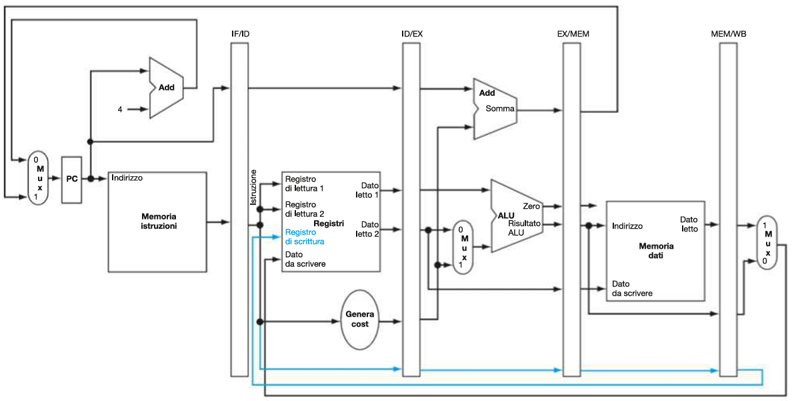
Registri di pipeline:
I registri di pipeline sono stati aggiunti tra ogni stadio per memorizzare i dati e i segnali di controllo necessari per il ciclo successivo:
- IF/ID: (64 bit) Registra l’istruzione prelevata e l’indirizzo del Program Counter (PC).
- ID/EX: (128 bit) Memorizza i dati letti dai registri, i segnali di controllo e l’istruzione decodificata.
- EX/MEM: (97 bit) Contiene i risultati dell’ALU e i segnali di controllo per la memoria.
- MEM/WB: (64 bit) Trasporta i dati letti dalla memoria e i risultati finali verso lo stadio di scrittura (Write Back).
Gestione del numero del registro di destinazione:
Bus utili a trasportare il numero del registro di destinazione di un’istruzione attraverso gli stadi della pipeline fino al MEM/WB, fondamentali per garantire che i dati siano scritti nel registro corretto nello stadio WB, soprattutto per le istruzioni load.
Bus blu basso nell’immagine.
DIAGRAMMI DELLE PIPELINE
Immaginiamo le seguenti istruzioni:
lw x10, 40(x1)
sub x11, x2, x3
add x12, x3, x4
lw x13, 48(x1)
add x14, x5, x6Ci sono due modi di rappresentare l’esecuzione di questo programma con pipeline:
Diagramma a più cicli di clock
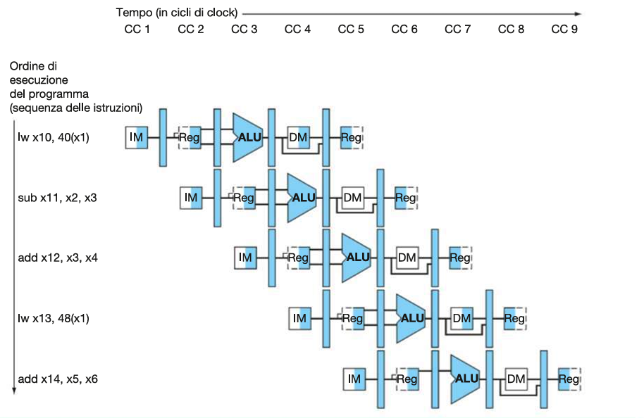
Diagramma a singolo ciclo di clock
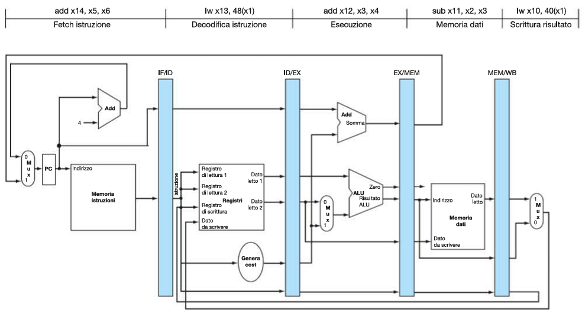
Corrispondente al quinto ciclo di clock del diagramma a più cicli
ESEMPIO DI ESECUZIONE DI LOAD
**CC 1
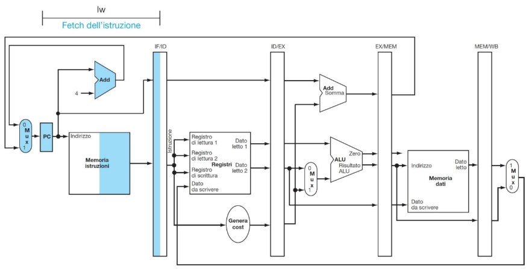
**CC2
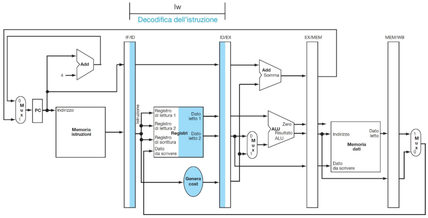
**CC3
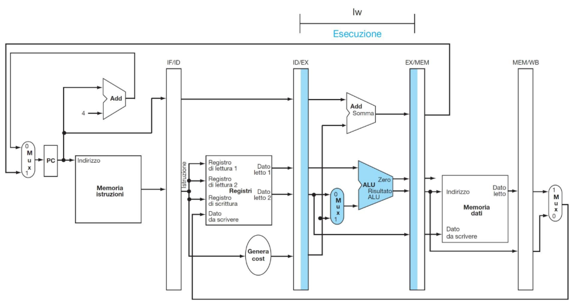
**CC4
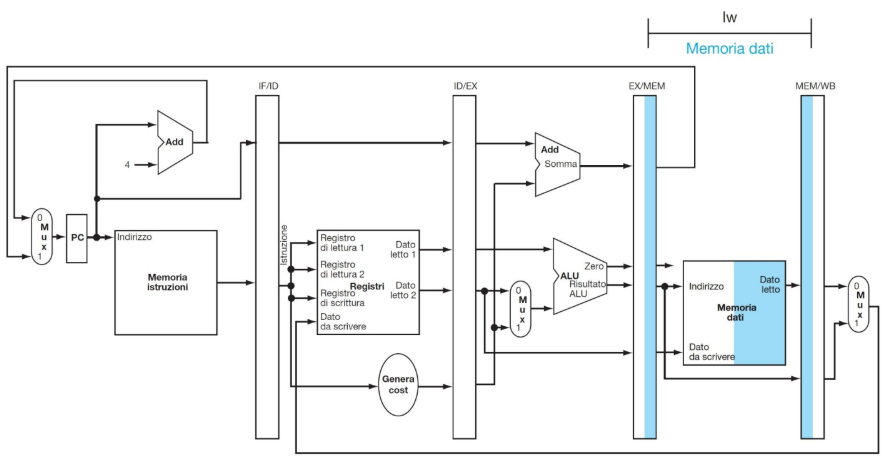
**CC5
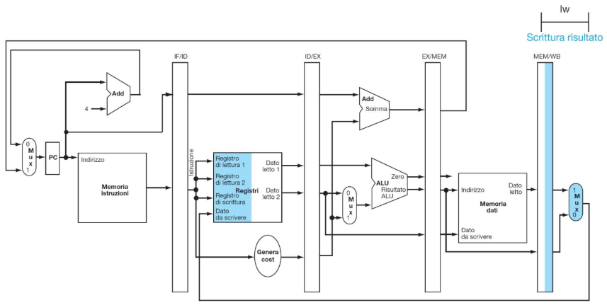
IMPLEMENTAZIONE DI CU E ALU CONTROL
Control Unit (CU):
Stessi segnali dell’implementazione a single cycle ma che in questo caso vengono utilizzati in stadi diversi:
| Fase | ALUOp | ALUSrc | Branch | MemRead | MemWrite | MemToReg | RegWrite |
|---|---|---|---|---|---|---|---|
| IF | |||||||
| ID | |||||||
| EX | ✓ | ✓ | |||||
| MEM | ✓ | ✓ | ✓ | ||||
| WB | ✓ | ✓ | |||||
| Dato che in fase IF e in fase ID si verificano sempre le stesse azioni ad ogni ciclo di clock (qualsiasi istruzione sia), i segnali di controllo devono essere generati durante lo stadio di ID, per essere trasportati agli stadi successivi (EX, MEM, WB) insieme all’istruzione a cui si riferiscono. | |||||||
Quindi, come per le istruzioni, anche i segnali vengono mano a mano registrati nei registri tra stadi (ID/EX, EX/MEM, MEM/WB), in modo da essere propagati da ID al loro stadio di appartenenza: |
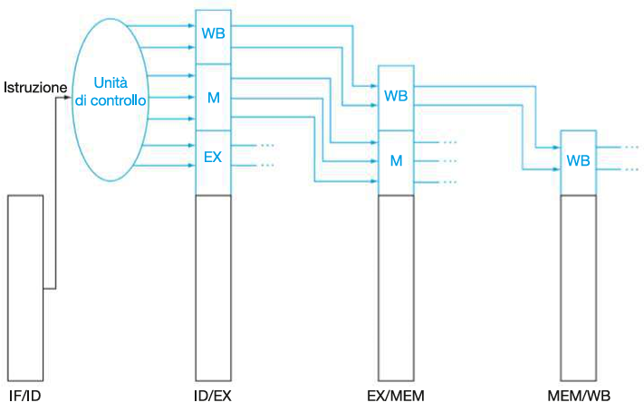
ALU Control:
Stessa funzione dell’implementazione a single cycle ma con il vincolo di posizione nello stadio EX, dove appunto si trova l’ALU.
DATAPATH COMPLETO SENZA GESTIONE DI HAZARD
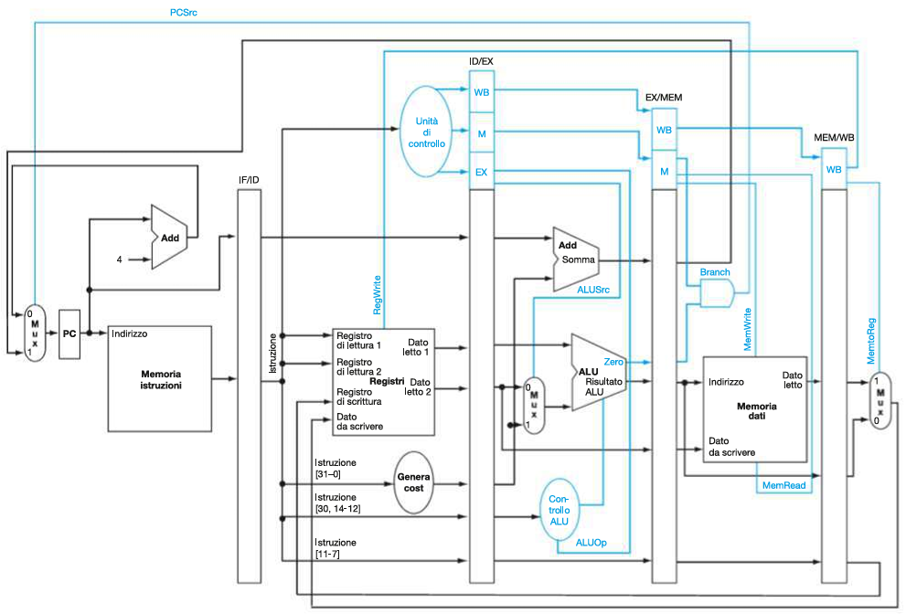
IMPLEMENTAZIONE CON FORWARDING
Una CPU a pipeline reale tiene conto anche della gestione del forwarding.
Esempio:
Prendiamo ad esempio il seguente script:
sub x2, x1, x3 # Produce x2
and x12, x2, x5 # Usa x2
or x13, x6, x2 # Usa x2
add x14, x2, x2 # Usa x2
sw x15,100(x2) # Usa x2 sub x2, x1, x3 modifica il valore di x2 da 10 a -20 allo stadio WB (CC5)
Utilizzando un diagramma con più cicli di clock:
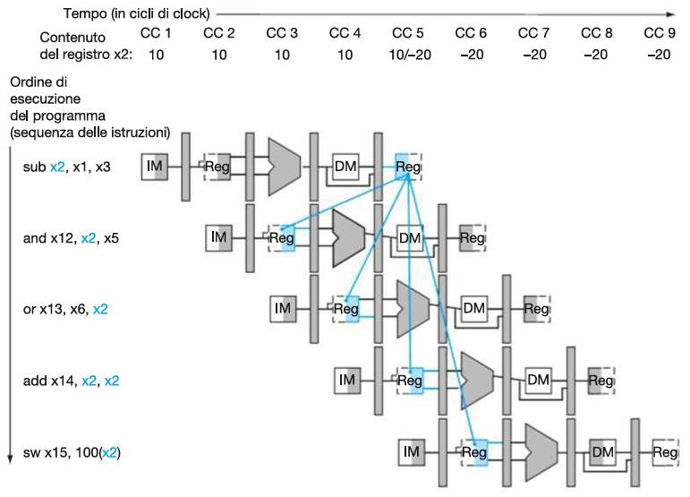
sub x2, x1, x3⟶and x12, x2, x5: 1.a hazard (legge ancora 10).sub x2, x1, x3⟶or x13, x6, x2: 2.b hazard (legge ancora 10).sub x2, x1, x3⟶add x14, x2, x2: NO hazard (legge -20).sub x2, x1, x3⟶sw x15,100(x2): NO hazard (legge -20).
Vediamo come identificare e risolvere questi hazard sui dati:
1. Identificazione degli hazard
⟶ leggi prima qui Riprendendo l’esempio iniziale:
sub x2, x1, x3 # Produce x2
and x12, x2, x5 # Usa x2
or x13, x6, x2 # Usa x2
add x14, x2, x2 # Usa x2
sw x15,100(x2) # Usa x2 Confronto tutte le istruzioni con la prima (che ha il registro x2 come rd):
1. Hazard tra sub x2, x1, x3 e and x12, x2, x5:
(si verifica quando and si trova in ID/EX e sub si trova in EX/MEM → hazard 1)
ID/EX.rs1 di and x12, x2, x5 = x2
EX/MEM.rd di sub x2, x1, x3 = x2
EX/MEM.RegWrite = 1
rd ≠ 0
hazard su rs1 (x2) → hazard 1.a
2. Hazard tra sub x2, x1, x3 e or x13, x6, x2:
(si verifica quando or si trova in ID/EX e and si trova in MEM/WB → hazard 2)
ID/EX.rs2 di or x13, x6, x2 = x2
MEM/WB.rd di sub x2, x1, x3 = x2
MEM/WB.RegWrite = 1
rd ≠ 0
hazard su rs2 (x2) → hazard 2.b
3. Hazard tra sub x2, x1, x3 e add x14, x2, x2:
(si verifica quando add si trova in ID/EX e sub ha già scritto il risultato → NO hazard)
4. Hazard tra sub x2, x1, x3 e sw x15, 100(x2):
(si verifica quando sw si trova in ID/EX e sub ha già scritto il risultato → NO hazard)
2. Propagazione dei dati corretti
Diagramma a più cicli
Una volta identificati i data hazard nei vari casi procediamo a bypassarli con la tecnica del forwarding:
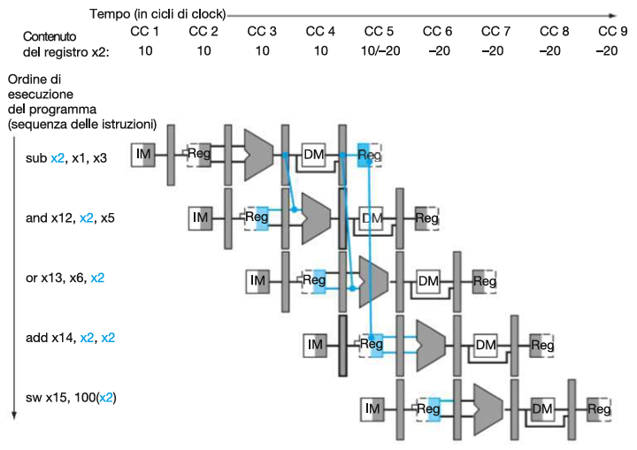
Il valore aggiornato di x2 calcolato da sub x2, x1, x3 (pari a -20) viene prelevato direttamente dal registro di pipeline (es. EX/MEM) e inoltrato (forwarded) alla componente che lo richiede, evitando così l’uso del valore obsoleto (pari a 10) presente nel file di registri, e anche l’uso di stalli.
A livello di hardware:
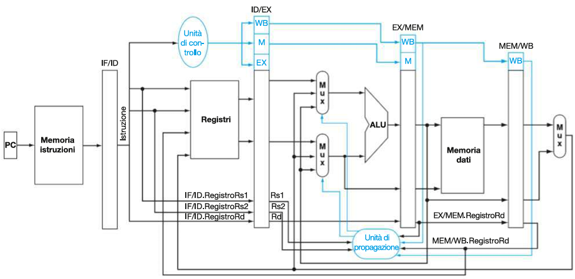
N.B manca il mux di ALUSrc sull’uscita del mux di PropagaB
Vanno aggiunte 3 componenti principali nello stadio EX:
Due Mux (multiplexer) sui due input dell’ALU (A e B) e una Forwarding Unit (unità di controllo propagazione).
MUX A:
Selettore:
segnale PropagaA proveniente dalla Forwarding Unit.
Output:
PropagaA= 00 →ID/EX.ReadData1(valore standard letto dai registri)PropagaA= 01 →EX/MEM.ALUResult(forwarding da istruzione 1 ciclo prima)PropagaA= 10 →MEM/WB.WriteData(forwarding da istruzione 2 cicli prima)
MUX B:
Selettore:
segnale PropagaB proveniente dalla Forwarding Unit.
Output:
PropagaB= 00 →ID/EX.ReadData1(valore standard letto dai registri)PropagaB= 01 →EX/MEM.ALUResult(forwarding da istruzione 1 ciclo prima)PropagaB= 10 →MEM/WB.WriteData(forwarding da istruzione 2 cicli prima)- (se
ALUSrc == 1, invece va usato l’immediato)
Forwarding unit:
Input:
ID/EX.RegisterRs1eID/EX.RegisterRs2EX/MEM.RegisterRd,EX/MEM.RegWriteMEM/WB.RegisterRd,MEM/WB.RegWrite
Output:
PropagaA, PropagaB (2-bit ciascuno) per controllare i mux
Tabella delle propagazioni
| Segnale di selezione | Origine del dato | Spiegazione |
|---|---|---|
PropagaA = 00 | ID/EX.ReadData1 | Il primo operando (rs1) viene letto direttamente dal file di registri (valore normale, senza hazard). |
PropagaA = 01 | EX/MEM.ALUResult | Il primo operando (rs1) viene forwardato dal risultato della ALU dell’istruzione immediatamente precedente (1 ciclo prima). |
PropagaA = 10 | MEM/WB.WriteData | Il primo operando (rs1) viene forwardato dal risultato dell’istruzione di due cicli prima (MEM/WB), già pronto per il write back. |
PropagaB = 00 | ID/EX.ReadData2 | Il secondo operando (rs2) viene letto direttamente dal Datapath Single-Cycle (valore normale, senza hazard). |
PropagaB = 01 | EX/MEM.ALUResult | Il secondo operando (rs2) viene forwardato dal risultato della ALU dell’istruzione immediatamente precedente (1 ciclo prima). |
PropagaB = 10 | MEM/WB.WriteData | Il secondo operando (rs2) viene forwardato dal risultato dell’istruzione di due cicli prima (MEM/WB), già pronto per il write back. |
Esempio:
// Forward A
if (EX/MEM.RegWrite == 1 && EX/MEM.rd != 0 && EX/MEM.rd == ID/EX.rs1)
ForwardA = 10; // da EX/MEM
if (MEM/WB.RegWrite == 1 && MEM/WB.rd != 0 && MEM/WB.rd == ID/EX.rs1)
ForwardA = 01; // da MEM/WB
else
ForwardA = 00; // da registr
// Forward B → stessa logica ma con rs2IMPLEMETNAZIONE CON STALL
Una CPU a pipeline reale tiene conto anche della gestione degli stalli.
Esempio:
Prendiamo ad esempio il seguente script:
lw x2, 20(x1) # Produce x2 (lw -> No Forwarding)
and x4, x2, x5 # Usa x2
or x8, x2, x6 # Usa x2
add x9, x4, x2 # Usa x2
sub x1, x6, x7 # Non usa x2 N.B. nell’esempio teniamo conto di una CPU con forwarding tra MEM e EX.
Il load (lw) è un caso speciale:
Il dato da memoria non è disponibile subito, ma solo alla fine dello stadio MEM (MEM/WB) , quindi il risultato non può essere forwardato in tempo se serve già nello stadio EX del ciclo successivo → serve uno stallo (load-use hazard).
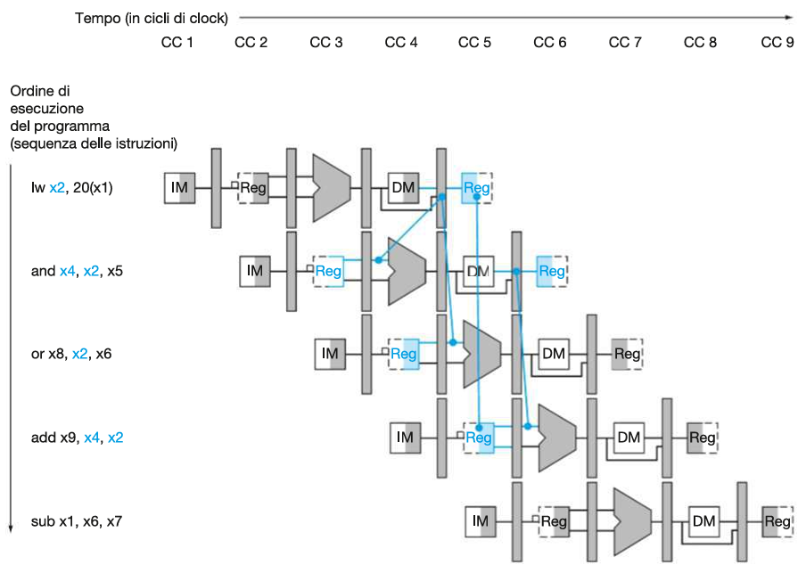
lw x2, 20(x1)⟶and x4, x2, x5: Load-use hazard (stall).lw x2, 20(x1)⟶or x8, x2, x6: 2.b hazard (forwarding → no stall).lw x2, 20(x1)⟶add x9, x4, x2: NO hazard (valore di x2 già in memoria)lw x2, 20(x1)⟶sub x1, x6, x7: NO hazard (registri diversi)
Vediamo come identificare e risolvere questi hazard sui dati:
1. Identificazione degli hazard
⟶ leggi prima qui Riprendendo l’esempio iniziale:
lw x2, 20(x1) # Produce x2 (lw -> No Forwarding)
and x4, x2, x5 # Usa x2
or x8, x2, x6 # Usa x2
add x9, x4, x2 # Usa x2
sub x1, x6, x7 # Non usa x2 Confronto tutte le istruzioni con la prima (che ha il registro x2 come rd):
1. Hazard tra lw x2, 20(x1) e and x4, x2, x5:
(lw non ha ancora superato MEM dunque l’hazard è Load-Use)
(si verifica quando and si trova in ID/EX e lw si trova in EX/MEM→ hazard Load-Use)
ID/EX.rs1 di and x4, x2, x5 = x2
IF/ID.rd di lw x2, 20(x1) = x2
ID/EX.MemRead == 1
rd ≠ 0
hazard su rs1 (x2) → hazard Load-Use
2. Hazard tra lw x2, 20(x1) e or x8, x2, x6:
(lw ha superato MEM dunque l’hazard NON è Load-Use)
(si verifica quando or si trova in ID/EX e lw si trova in MEM/WB→ hazard 2)
ID/EX.rs1 di or x8, x2, x6 = x2
MEM/WB di lw x2, 20(x1) = x2
EX/MEM.RegWrite == 1
rd ≠ 0
hazard su rs1 (x2) → hazard 2.a
3. Hazard tra lw x2, 20(x1) e add x9, x4, x2:
(si verifica quando add si trova in ID/EX e lw ha già scritto il risultato → NO hazard)
4. Hazard tra lw x2, 20(x1) e sub x1, x6, x7:
ID/EX.rs1 di sub x1, x6, x7 = x6
ID/EX.rs2 di sub x1, x6, x7 = x7
x6 != x2 && x7 != x2→ NO hazard
2. Stallo della pipeline
Diagramma a più cicli
Una volta identificati i load-use hazard procediamo a correggerli con la tecnica dello stall:
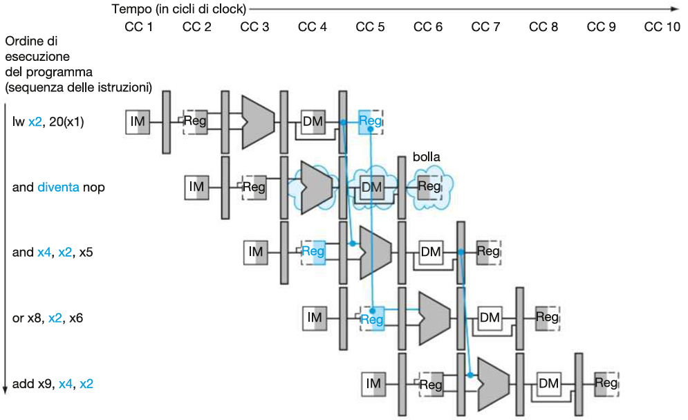
Quando and entra in ID, l’hazard detection unit si accorge che:
ID/EX.MemRead == 1 → l’istruzione precedente (attualmente salvata in ID/EX) è un lw
ID/EX.RegisterRd == IF/ID.RegisterRs1 → e x2 viene usato ora
→ quindi si tratta di un hazard Load-Use e si genera uno stallo:
tutti i segnali della CU vanno a 0 (inserimento di nop) e il PC non viene aggiornato:
ALUSrc = 0
ALUOp = 00
MemRead = 0
MemWrite = 0
RegWrite = 0
MemToReg = 0
Branch = 0
PCWrite = 0
IF/ID.Write = 0Dunque l’istruzione and si blocca nella fase ID (diventando nop) ma rimane salvata in IF/ID, in questo modo la si può riprendere al ciclo di clock successivo (PCWrite = 0 e IF/ID.Write = 0) .
A livello di software:
lw x2, 20(x1)
nop
and x4, x2, x5*In un sistema con hazard detection unit, (come RISC-V) non serve scriverlo: l’hardware inietta automaticamente la bolla quando rileva un hazard load-use.
A livello di hardware:
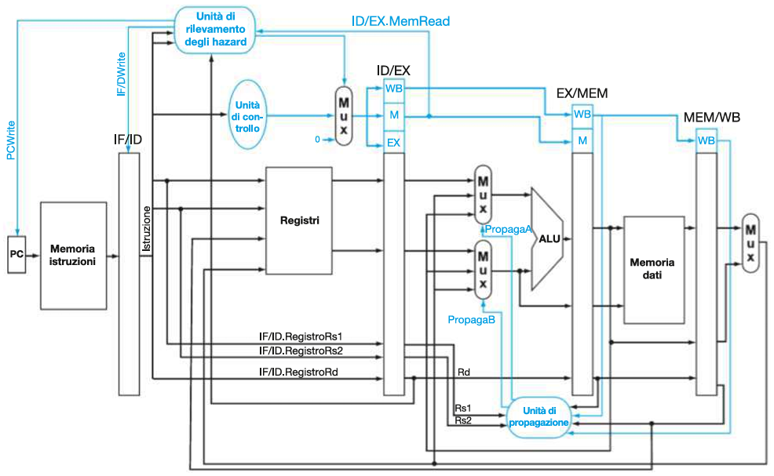
Vanno aggiunte 2 componenti principali nello stadio EX: Un Mux (multiplexer) tra la CU e il registro ID/EX, e un’Hazard Detection Unit (unità di rilevamento degli hazard).
MUX:
Selettore:
segnale stall proveniente dall’Hazard Detection Unit.
Output:
stall= 0 → segnali della CU.stall= 1 → 0 (tutti i segnali a 0).
Hazard Detection Unit:
Input:
ID/EX.RegisterRs1eID/EX.RegisterRs1.IF/ID.RegisterRd.ID/EX.MemRead.
Output:
PcWrite(hazard load-use →PCWrite = 0, il Program Counter non avanza).IF/IDWrite(hazard load-use →IF/ID.Write = 0, non si aggiorna il registro IF/ID)stall(hazard load-use →stall = 1).
IMPLEMENTAZIONE CON ANTICIPAZIONE DEI SALTI
Una CPU a pipeline reale tiene conto anche della gestione dell’anticipazione del controllo sui salti condizionati.
Esempio:
Prendiamo ad esempio il seguente script:
beq x1, x0, 16 # Se x1 == x0 ⟶ lw x4, 100(x7)
and x12, x2, x5 # Se x1 == x0 ⟶ flush
or x13, x6, x2 # Se x1 == x0 ⟶ flush
add x14, x2, x2 # Se x1 == x0 ⟶ flsuh
lw x4, 100(x7) # Target del branchSe il salto è preso (x1 == x0) il PC punta direttamente all’istruzione lw x4, 100(x7).
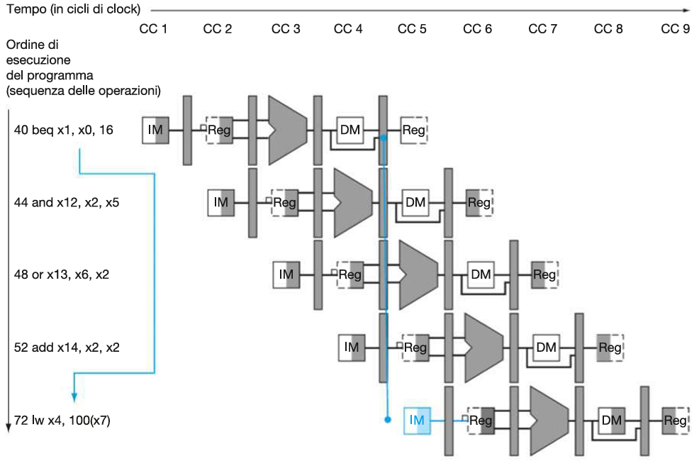
beq x1, x0, 16⟶and x12, x2, x5: control hazard (fetch prima del controllo).beq x1, x0, 16⟶or x13, x6, x2: control hazard (fetch prima del controllo).beq x1, x0, 16⟶add x14, x2, x2: control hazard (fetch prima del controllo).
Vediamo come ridurre questi hazard sul controllo:
1. Riduzione dei ritardi associati ai salti
Una volta identificati i control hazard (ogni volta che ho un salto condizionato) procediamo a ridurne il peso anticipando la decisione del salto e l’aggiornamento del PC:
Diagramma a più cicli:
| ISTRUZIONE | 100ps | 200ps | 300ps | 400ps | 500ps | 600ps | 700ps | 800ps | 900ps | 1000ps | 1100ps | 1200ps | 1300ps | 1400ps | 1500ps | 1600ps | 1700ps | 1800ps |
|---|---|---|---|---|---|---|---|---|---|---|---|---|---|---|---|---|---|---|
beq x1, x0, 16 | IF | IF | ==ID== | ID | EX | EX | \ | \ | \ | \ | ||||||||
and x12, x2, x5 | IF (flush) | IF (flush) | ID | ID | EX | EX | \ | \ | WB | WB | ||||||||
or x13, x6, x2 | IF | IF | ID | ID | EX | EX | \ | \ | WB | WB | ||||||||
add x14, x2, x2 | IF | IF | ID | ID | EX | EX | \ | \ | WB | WB | ||||||||
lw x4, 100(x7) | IF | IF | ID | ID | EX | EX | MEM | MEM | WB | WB |
Abbiamo:
- anticipato il controllo della condizione di salto da EX a ID
- anticipato l’aggiornamento del PC dal 4°CC a ID
(se si vuole evitare il flush su and x12, x2, x5 basta inserire uno stallo dopo beq x1, x0, 16).
A livello di hardware:
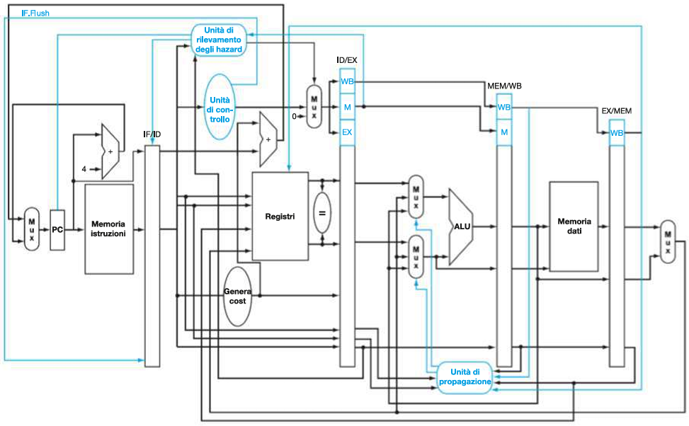
Vanno aggiunte 2 componenti principali nello stadio ID:
Un Comparator tra il Register File e il registro ID/EX, e un’Adder per calcolare l’indirizzo di salto (PC + offset).
Il Comparator ha la funzione di verificare che la condizione del salto sia verificata (per beq e bne) in quanto va a comparare i valori dei registri.
L’adder calcola l’indirizzo corretto del PC e manda il segnale in input al MUX che seleziona tra: PC + 4 (incremento normale del PC) e PC + offset (indirizzo di salto).
Inoltre viene aggiornata la CU includendo il segnale di controllo IF.Flush che va in input al registro IF/ID e genera il Flush dell’istruzione nel caso di temporaneo aggiornamento errato del PC (esempio di and x12, x2, x5).
*N.B. Oltre ai componenti per implementare l’anticipazione dei salti sono state aggiunte alcune propagazioni dagli stadi EX, MEM e WB. Questi forwarding di dati servono per eliminare eventuali data hazard che si andrebbero a verificare tra istruzioni precedenti ad un salto condizionato e l’istruzione del salto stessa (temporanea mancanza in memoria o tra i registri degli operandi del salto).
IMPLEMENTAZIONE CON GESTIONE DELLE TRAP
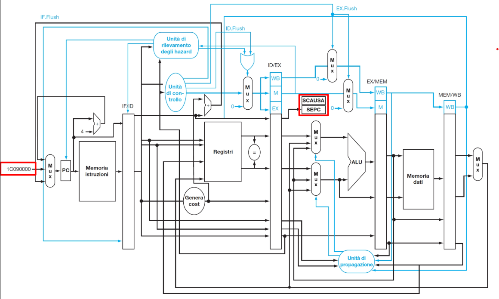
Si deve aggiungere:SCAUSE e SEPC:
2 componenti principali nello stadio MEM: Il registro SCAUSE e il registro e SEPC (CSR Registers): SCAUSE: contiene il codice della causa della trap che si è verificata. SEPC: salva il Program Counter (PC) dell’istruzione che ha generato la trap, per poter riprendere l’esecuzione dopo la gestione. Entrambi vanno aggiunti in uscita dal registro di pipeline ID/EX.
Ingresso condizione trap:
Un ingresso al MUX che seleziona l’indirizzo di salto per gestire l’eccezione/interruzione (ad esempio, l’indirizzo della routine di servizio degli interrupt, indirizzo 1C090000).
Controllo Flush:
Nuovi segnali di Flush (ID.Flush, EX.Flush) e l’OR in EX che viene usato per la gestione del segnale di flush nello stadio EX Serve a combinare diversi segnali di flush che possono arrivare, ad esempio, sia da una eccezione sia da un hazard di controllo o da altre condizioni che richiedono di svuotare (flushare) la pipeline a partire dallo stadio EX. Quindi l’unità di controllo ora gestisce anche i segnali relativi a eccezioni/interrupt, decidendo quando fare il flush, salvare SEPC/SCAUSE, e deviare il PC.